Chapter 28: Bubbles, Crashes, and Circuit Breakers
Bubbles and crashes occur when prices differ greatly from fundamental values. The wealth that these events create, destroy, and redistribute is often enormous. Bubbles and crashes thus are quite scary when prices change quickly.
Extreme volatility concerns many people:
• Traders pay close attention to it because large, unexpected price changes expose them to tremendous risks and opportunities.
• Clearinghouses worry about extreme volatility because traders who experience large losses may be unable to settle their trades or contracts. Clearinghouses and their members must bear the costs of resulting settlement failures.
• Exchanges and brokers plan for extreme volatility because extreme price changes usually generate---or are generated by---huge volumes that can overwhelm their trading systems and cause them to fail. Large sustained price drops especially concern them because trading volumes usually shrink substantially and remain low for a long time afterward.
• Microeconomists fret over extreme volatility because very large price changes often appear to be inconsistent with rational pricing and informative prices. They wonder whether excess price volatility causes people to make poor decisions about the use of economic resources.
• Macroeconomists fear that the wealth effects associated with large, broad-based changes in market values may adversely affect the investment and consumption spending decisions that companies and individuals make. Poor spending decisions can cause unsustainable booms and protracted contractions in economic activity.
These concerns explain why market regulators regularly examine trading practices and trading rules that might induce or attenuate extreme volatility. Some policies that they consider can create markets which are more resilient. Other policies have little value, and many policies can harm the markets. Regulators therefore must carefully analyze how market structure affects volatility before adopting new policies.
In this chapter, we consider what causes extreme volatility, and how regulations might make it less likely or less dangerous. Not surprisingly, analysts generally understand the causes of extreme volatility better after the fact than beforehand. Volatility episodes rarely have common causes. They do, however, tend to follow a common pattern. Traders who can recognize conditions that may lead to extreme volatility can take positions that are highly profitable. Regulators who can recognize these conditions can occasionally adopt policies to reduce the harmful aspects of extreme volatility.
We start our discussion by distinguishing among the types and causes of extreme volatility, and then illustrate these points by considering several examples of bubbles and crashes. We next examine how changes in market structure can affect extreme volatility. Finally, we briefly consider how politics affects regulatory policies taken in response to extreme volatility.
The Price Accelerator
Increases in prices transfer wealth from pessimistic traders who have short positions to optimistic traders who have long positions. These transfers can cause accelerated price changes.
When prices rise, optimistic traders get wealthier. The most optimistic traders may buy more. If they do, they may cause prices to rise further.
When prices rise, pessimistic traders lose. The losses of the most pessimistic traders may force them to buy back short positions to cover margin calls. Their buying may cause prices to rise further.
In both cases, the sellers will be traders who do not have such strong opinions. Mild pessimists will sell because the increase in market price makes their short positions more attractive. Mild optimists will sell because the increase in market price makes their long positions less attractive.
Source: "The Canonical Bubble," manuscript by Jack Treynor.
28.1 BUBBLES AND CRASHES
Bubbles occur when prices rise to levels that are substantially above fundamental values. (Fundamental values, of course, are not common knowledge. If they were, crashes and bubbles would not occur.) Some bubbles occur very quickly. Others occur over long periods. Many bubbles end with a crash. Traders say that such bubbles pop.
Crashes occur when prices fall very quickly. Crashes often follow bubbles, but they also occur in other circumstances. Crashes sometimes are called market breaks because the price path breaks when prices fall very quickly. They also are called market meltdowns when they overload the order handling capacity of a market.
Bubbles and crashes may affect an individual trading instrument or many instruments at once. Those which simultaneously affect many instruments are broad-based events or marketwide events. Very large price changes most commonly affect only an individual instrument. Broad-based bubbles and crashes are quite rare.
28.1.1 Typical Bubble and Crash Dynamics
Bubbles start when buyers become overly optimistic about fundamental values. The potential of new technologies and the potential growth of new markets can greatly excite some traders. Unfortunately, many of these traders cannot recognize when prices already reflect information about these potentials. They also may not adequately appreciate the risks associated with holding the securities that interest them. If enough of these enthusiastic traders try to buy at the same time, they may push prices up substantially.
The resulting price increases may encourage momentum traders to buy, in the hope that past gains will continue. Some momentum traders may buy because they hope to obtain the profits that their neighbors and friends have already earned. If enough traders follow them, they will realize their hopes. The last buyers, however, will lose badly.
Order anticipators may buy in anticipation of new uninformed buyers. They will profit if they can get out before prices fall.
The combined trading of these traders can cause a bubble in which prices exceed fundamental values. Momentum traders and order anticipators, in particular, tend to accelerate price changes. Prices also accelerate when early buyers grow more confident as their wealth increases, and when early sellers repurchase their positions to stop their losses.
Value traders and arbitrageurs may recognize that prices exceed values, but they may be unable or unwilling to sell in sufficient volume to prevent the bubble from forming. These traders may be unable to sell as much as they want to sell if they do not have large positions to sell, if they do not have enough capital to carry large short positions, or if they cannot easily sell short. They may be unwilling to sell if they suspect that uninformed traders will continue to push prices up, or if they lack confidence in their abilities to estimate values well.
Eventually prices rise to a level that causes sellers to start trading aggressively. The sellers may be long-term holders, early buyers who want to realize their gains, contrarians, value traders, or arbitrageurs. Once their selling causes prices to fall, momentum buyers lose their interest. Overly optimistic buyers lose their confidence, and sellers become more confident. Late buyers especially worry about their positions, and often start selling to stop their losses. Traders who financed their positions on margin may have to sell their positions to satisfy margin calls from their brokers. Other long holders who have placed stop loss orders also will start to sell. Order anticipators may anticipate these margin calls and stop orders, and sell before them. A crash occurs when the combined effect of all their selling causes prices to fall quickly.
You Believe You Are Right, but ... (Confidence Is Everything)
Even when value traders believe that prices greatly differ from fundamental values, they may lack the confidence to trade on their opinions. Trading against the majority opinion requires great courage. Since markets generally aggregate information from diverse sources extremely well, value traders must always wonder why they believe they understand values better than everyone else does. Value traders will not trade unless they are confident they are right, even after considering that the majority of traders think otherwise.
Value trading is especially difficult when unresolved uncertainties make it impossible for anyone to estimate values well. In that case, value traders will not trade until price is far from their estimates of value. This observation explains why bubbles often form in the stock prices of companies that hope to profit from highly promising, but unproven, technologies.
The uncertainty associated with crashes, and the great demands for liquidity that panicked sellers make during crashes, can cause prices to drop below fundamental values. A bounce back in price therefore follows many crashes when traders recognize that the market overreacted. Traders call this bounce a dead cat bounce, for reasons that you can speculate on privately.
You Know You Are Right, but ... (Timing Is Everything)
Consider the trade timing decisions that value traders must make when they believe that prices are too high.
If they initially have long positions, and they sell them too soon, they will lose the opportunity to sell at higher prices as uninformed traders cause prices to continue to rise.
If they initially have no positions, and they sell short too soon, they initially will lose on their short positions. If they cannot finance their losses, their brokers will force them to buy to cover their losses, and they will lose the opportunity to profit when prices fall.
If value traders wait too long to sell, they will lose the opportunity to profit. Other value traders will enter and push prices down, early buyers will try to realize their gains, or the flow of uninformed traders necessary to maintain the bubble may end.
28.1.2 Fundamental and Transitory Volatility
Bubbles and crashes---like all price changes---may be due to fundamental or transitory factors. Unexpected information about fundamental values causes fundamental volatility. The demands for liquidity by uninformed traders cause transitory volatility. Most bubbles and crashes involve both types.
The two volatility types have different effects on prices. Fundamental price changes have a permanent effect in the sense that subsequent price changes are unrelated to previous price changes. Transitory price changes tend to reverse when value traders and arbitrageurs act on the differences between prices and fundamental values.
Bubbles generally start when prices rise on good news about fundamental values. These initial price changes contribute to fundamental volatility. Pseudo-informed traders then overreact to the news and to the resulting price increases. They eventually cause prices to exceed values. This portion of the bubble contributes to transitory volatility.
Bubbles often burst when traders react to bad fundamental news that causes prices to fall. The combination of bad news and falling prices shakes trader confidence and becomes a focal point for rational thought. As traders start thinking more carefully about values, many conclude that prices are too high, and sell. The resulting volumes and decreases in price are vastly disproportionate to the volumes and price changes that we would normally have expected in response to the news. The extreme response is due to the initial overpricing rather than to overreaction to the news. The bad fundamental news merely triggers the crash. The true causes of the crash lie in the bubble that preceded it. Although these events move prices toward their fundamental values, this reversion in prices contributes to transitory volatility. It occurs only because uninformed traders caused prices to rise during the bubble.
The News Just Wasn't Good Enough
In 1999 and 2000, the prices of many Internet companies fell after they reported record earnings. These earnings announcements caused traders to think carefully about values. Prices crashed because these companies could not produce the extremely high earnings growth necessary to sustain overly optimistic price expectations.
Panicked sellers sometimes cause prices to drop below fundamental value at the end of a crash. These price overreactions, and the price reversals that follow them, create additional transitory volatility.
28.2 SOME BUBBLE AND CRASH EXAMPLES
This section describes several bubbles and crashes to illustrate how bubbles and crashes occur. I selected these events because they involve important market microstructure issues.
Traders and regulators are very familiar with the most important of these examples. If you intend to work in the markets, you should be as well. The seven events that we discuss here do not include all important examples of bubbles and crashes. You may wish to consult other sources to learn about the Dutch tulip bulb mania and crash of 1637, the British South Sea Company bubble and crash of 1720, and many similar events of great interest to economic historians.
As you read through these stories, consider the role that investor sentiment played in these bubbles and crashes. In most cases, you will find that sentiment was a more important cause of these events than any issue involving market structure. The public, however, often demands changes in market structure following crashes. We discuss regulatory proposals to deal with crashes in the following section.
28.2.1 The 1929 Stock Market Crash
On October 28-29, 1929, the U.S. stock markets crashed in what may be the most famous stock market crash of all times. The Dow Jones Industrial Average (DJIA) dropped 13 percent on October 28 and another 12 percent on October 29. Although it rose 12 percent on October 30 and 3 percent more on October 31, the market continued to drop substantially over the next several weeks, months, and years. Figure 28-1 shows that by July 8, 1932, the DJIA had dropped to only 11 percent of its previous maximum closing value, reached on September 7, 1929.
This crash followed tremendous growth in prices in the late 1920s. The DJIA steadily rose by almost 300 percent from the beginning of 1924 to the September 1929 peak. Following the crash, the DJIA did not make a new high until more than 25 years later, in November 1954.
Many commentators attribute the bubble that preceded the 1929 crash to uninformed speculators who borrowed excessively to buy stocks. Traders were very excited by the prospects of new technology and media companies that were developing radio. In hindsight, traders clearly overvalued these stocks. For example, RCA---which proved to be one of the strongest radio stocks---did not rise to a new high until 34 years after the crash.
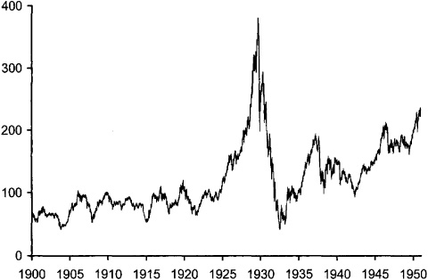
FIGURE 28-1.\ Dow Jones Industrial Average, 1900-1950
Source: Dow Jones and Co., at [www.djindexes.com].
The crash partly occurred because traders needed to sell stock to satisfy margin calls following the decline in stock prices over the previous month. Much selling undoubtedly also was due to value traders who sold the market short, and to speculators who anticipated the sell orders that the margin calls would create.
Market Failures or Market Corrections?
Analysts generally cannot attribute the large price changes that occur in broad-based market crashes to unexpected bad fundamental news of commensurate importance. Many people therefore believe that crashes demonstrate that markets do not produce informative prices. When they see prices change substantially on seemingly trivial information, they conclude that crashes represent market failures.
Most crashes, however, more likely represent corrections to previous pricing errors rather than market failures. They generally bring prices closer to fundamental values rather than move prices further from them.
Evidence for this conclusion lies in the behavior of prices following crashes. If crashes represented market failures, prices would generally rebound completely when traders discovered that prices were below values. In fact, prices generally rebound little following most crashes. Most crashes therefore more likely correct previous problems than create new ones.
Panicked sellers also caused prices to drop. Although panicked traders generally do not make good decisions, in hindsight, those who sold in the crash were quite lucky. Had they held their positions, they would have lost even more money in the next months and years. We shall shortly see that the same was not true in the 1987 stock market crash.
In response to concerns about excessive speculation on margin, the U.S. Congress gave the Federal Reserve Board authority to regulate the margins upon which speculators could buy stock. (The authority appears in the Securities Exchange Act of 1934.) The Fed immediately set stock loan margins at 45 percent, so that speculators had to have at least 45 cents of equity for every dollar of stock they purchased.
The 1929 stock market crash preceded the Great Depression of the 1930s. Many people associate the two events and believe that the crash caused the Great Depression. Few economists believe this, however. The Great Depression was more likely caused by excessively tight monetary policy that led to widespread banking failures from late 1930 through early 1931, and again in 1933. Most economists also believe that spending cuts the government made in 1937 further extended the Great Depression.
28.2.2 The October 1987 Stock Market Crash
The U.S. stock markets crashed most dramatically in October 1987. (See figure 28-2.) The DJIA lost 23 percent on Monday, October 19. This loss was---and remains---its largest daily percentage loss. The loss followed a 5 percent loss on the previous Friday, a cumulative loss of 9 percent in the previous week, and a cumulative 17 percent loss from its previous all-time high, achieved on August 25.
Portfolio Insurance or Portfolio Manager Insurance?
In principle, portfolio managers use portfolio insurance to protect their investment sponsors from losses that would result if the values of their portfolios drop below the values of the liabilities that the sponsors must fund. These liabilities typically are future pension benefits. In this application, the target guaranteed minimum portfolio value---the strike price of the put---should be the value of the liabilities that the sponsor must fund. Since these liabilities do not change much over time, neither should the target guaranteed minimum portfolio value.
In practice, portfolio insurers often increased the put strike price as the market value of their portfolios increased. This practice caused many people to refer to portfolio insurance as "portfolio manager insurance" because managers---and their sponsors---appeared to be locking in past successes rather than insuring against future shortfalls. The unfortunate consequence of these strike price increases was that portfolio managers would have to sell more when the market dropped than they would have needed to sell had they not ratcheted up the strike prices.
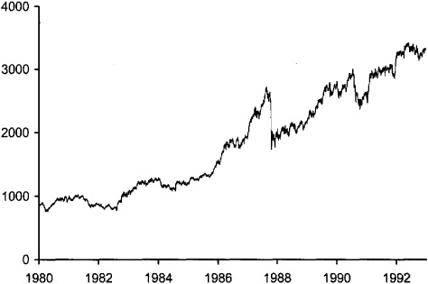
FIGURE 28-2.\ Dow Jones Industrial Average, 1980-1992
Source: Dow Jones and Co., at [www.djindexes.com].
These losses followed a substantial price increase. From the beginning of 1987 through August 25, the Dow rose 44 percent.
The market recovered quite quickly. The Dow rose 2 percent and 10 percent, respectively, on October 20 and 21. Although the market experienced many violent swings up and down over the next couple of months, it quickly resumed its previous growth. The Dow achieved a new all-time closing high less than two years later, on August 24, 1989. Remarkably, the Dow rose 2 percent in 1987 despite the crash.
The 1987 stock market crash was a very complex event with many causes. The most notable cause of the crash was the use of portfolio insurance by institutional investors. Portfolio insurance is a dynamic trading strategy that portfolio managers use to replicate the combined returns of a portfolio plus a put option. When correctly and successfully implemented, the strategy ensures that the total value of the portfolio will not fall below a value that the manager specifies. The specified value corresponds to the strike price of the dynamically replicated put option.
The strategy depends upon a formula that tells managers how much they should buy or sell given changes in the value of the portfolio. The formula, which comes from the Black-Scholes option-pricing model, depends on the volatility of the portfolio, the period over which the managers wish to protect the portfolio, and the minimum value that they wish to guarantee. Since managers must trade whenever prices change, the strategy is a dynamic trading strategy.
Portfolio insurance is highly destabilizing to market prices. When prices rise, portfolio insurers must buy stock. When prices fall, they must sell stock. Portfolio insurance therefore has the same effect on the market as stop orders. Indeed, many portfolio managers implemented their strategies using stop orders.
Portfolio insurance can work well when the total money covered by the strategy is small. Portfolio insurers then can execute their orders without much price impact. Great problems arise, however, when managers try to insure a significant fraction of the market. When sellers want to sell large quantities at the same time, prices can fall very substantially. Moreover, when everyone knows that large sellers will come onto the market when prices fall, order anticipators will quickly sell at the first sign of a price drop. Like-wise, buyers will withdraw from the market until prices have dropped substantially. Expectations about portfolio insurance selling therefore can drive the market down, even if no portfolio insurance selling occurs.
The Overhang of Portfolio Insurance on the Market
The total U.S. stock market capitalization before the 1987 stock market crash was about 2 trillion dollars. Institutional management controlled about 50 percent of this total. About 10 percent of these institutional funds were subject to portfolio insurance strategies. These figures imply that about 100 billion dollars was subject to portfolio insurance.
The delta of an option indicates how much the value of the option will change when the value of the underlying instrument changes. The typical option delta for portfolio insurance was probably about 0.4, so that a 1 percent drop in the market would require that managers sell 0.4 percent of their portfolios. At an approximate average price of 40 dollars per share, 0.4 percent of 100 billion dollars represents 10 million shares.
Many commentators believe that unrealistic expectations about how well the portfolio insurance strategy would perform caused the crash. By October 1987, portfolio insurance had become very popular. A rough calculation---presented in the box below---suggests that portfolio insurers would need to sell 10 million shares for every 1 percent drop in the market. This potential sell order volume is very large compared to the then current daily average volume of only 160 million shares. It is especially large because it represents money that managers would completely take out of the market rather than simply reallocate among other stocks. Many people wondered who would buy that equity risk.
Many traders were aware of the portfolio insurance problem. Several academics had written widely circulated papers about the problem, and it was a major topic of discussion at several practitioner conferences. Unfortunately, everyone was uncertain about how much money managers devoted to the strategy. This uncertainty undoubtedly contributed to the crash because nobody would want to buy before he or she believed that all sellers were either satisfied or discouraged.
The uncertainty would not have been so severe had portfolio insurers bought exchange-listed put option contracts instead of trying to replicate put options with dynamic trading strategies. Had they used contracts, everyone would have known the total open interest in the contracts. Traders therefore could have better estimated how much risk would be transferred when prices fell.
The 9 percent decline in prices in the week leading up to the crash, and especially the 5 percent decline on Friday before the crash, undoubtedly suggested to many traders that the markets faced great downside risk. Not surprisingly, the market fell hard when it opened on Monday, October 19. (See figure 28-3.)
The price declines before the crash may have been due to bad news about economic fundamentals. Traders were concerned about the trade deficit, trade tensions with Germany, international interest rates, the value of the dollar, and anti-takeover legislation pending in Congress. Moreover, just before the market opened on October 19, the United States announced that it had attacked Iranian oil platforms in the Persian Gulf. Although each of these stories should have decreased fundamental values, even when taken together, they were not so significant or so surprising that they could have reasonably accounted for the 36 percent drop in the Dow from its August 25 high to its October 19 close.
Several factors besides portfolio insurance selling probably contributed to the crash. First, prices may have been above fundamental values before the crash. Managers who believed that portfolio insurance protected them from significant loss may have switched their asset allocations from bonds to stocks in the months before the crash. The pressure of their purchases may have created a small bubble as prices quickly rose in the first three quarters of 1987.
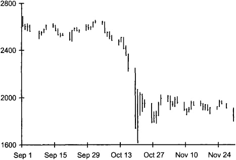
FIGURE 28-3.\ Dow Jones Industrial Average, September-November 1987
Source: Bridge Information Systems.
Second, the huge volumes that traders wanted to trade during the crash exceeded the trade processing capacity of the New York Stock Exchange and its floor traders. The most significant capacity problem involved dot matrix printers on the floor that printed orders which traders sent to the Exchange through the SuperDot order-routing system. During the crash, these printers could not print orders as fast as they arrived, which created an order backlog in the Exchange computer print queues. Breakdowns of several printers further compounded the problem. Consequently, many SuperDot orders had to wait more than an hour until they could be printed and executed. The traders who submitted them had no idea whether their orders were filled. Many undoubtedly telephoned sell orders to their floor brokers when they could not confirm that they had sold via SuperDot. The uncertainty associated with the capacity problem surely contributed to feelings of panic that many traders experienced.
Third, traders may have panicked as they watched the index futures market lead the stock market down. In normal trading, the index futures market generally leads the stock market because the futures market employs a faster trading system than the stock market. It also leads because index futures traders are interested only in finding the price of index risk. In contrast, the cash stock market consists of thousands of markets for individual stocks in which most traders are more concerned about firm-specific risk than index risk. When prices started to drop, they dropped first in the index futures market. Traders who saw those decreases in price knew that prices in the stock market would soon drop.
When capacity problems slowed the stock market, the spread between the cash index and the futures contract widened to unprecedented levels as the futures dropped faster than the stocks. The two markets, which generally follow each other very closely, became disconnected. Before the October 19 close, the S&P 500 Index futures contract was trading at a discount of more than 10 percent to concurrent value of the cash index!
Where's the Price?
The markets almost never give away anything for free. When traders want to buy an option contract, they must pay a premium to the seller. When traders want to replicate an otherwise identical option with a dynamic trading strategy, they likewise must incur some cost. Otherwise, no well-schooled trader would ever buy option contracts.
Unfortunately, traders can neither observe nor easily estimate the price of a dynamically created option. Dynamic option replication is expensive because traders always buy or sell after the price changes that require them to trade. They therefore trade later than they wish they could. Understanding exactly why dynamic options replication is expensive requires high-level mathematics that most portfolio managers and investment sponsors do not know.
Option replication is also expensive due to the impact that traders have on price when they trade to replicate options. Traders frequently underestimate these costs. When transaction costs are high, options replication is very expensive.
Many traders who adopted portfolio insurance undoubtedly ignored or underestimated these costs of option replication. For such traders, portfolio insurance must have appeared to be a tremendous bargain that gave them unlimited upside potential with limited downside potential for little cost.
Few traders now use the portfolio insurance strategy. Now that they know the full cost of portfolio insurance, most traders choose not to buy it.
Index arbitrage normally would ensure that such a huge discount would never exist. Arbitrageurs, however, largely stopped trading because they could not obtain quick executions of their sell orders in the stock market. They would not trade because they had no idea whether their stock sales would trade at the high prices the market was currently indicating or at lower prices that they feared would prevail when their orders actually executed.
The huge discount of the futures to the cash market undoubtedly caused some traders to submit more sell orders to the stock market. The unprecedented discounts also confused many traders and thereby contributed to their panic.
Finally, many buy-side traders could not contact their Nasdaq dealers during the crash. Before the 1987 crash, most Nasdaq dealers took their orders over the phone. During the crash, many traders could not reach their dealers because the dealers were overwhelmed with client orders. Moreover, some dealers simply took their phones off the hook because they did not want to trade. The inability to contact the Nasdaq dealers while the market was falling also must have contributed to trader panic.
In summary, the 1987 stock market crash had many causes. Chief among them was the confusion that traders felt when confronted with uncertainty about risk. Traders were uncertain about portfolio insurance selling, their ability to execute their orders, and the meaning of the extremely large spread between the cash index and the index futures contract price. These uncertainties undoubtedly caused many panicked traders to order sales that they later wished they had not.
Global Confusion
The 1987 stock market crash was a global event. Prices fell in almost every world market. In many cases, the percentage falls were greater than in the U.S. market.
This fact suggests that we cannot base any complete explanation for the 1987 crash only on U.S. factors. Either the crash had causes that affected all international markets, or some mechanism must have transmitted the volatility from the U.S. markets to other markets. Analysts have carefully examined this issue, but no clear picture has emerged. We do not all agree upon the causes of the 1987 global stock market crash.
Some analysts believe that common factors must have caused the crash throughout the world. Since the Asian and European markets crashed on Monday, October 19, before the U.S. markets opened, these analysts believe that the U.S. markets did not transmit their volatility to the foreign markets.
Analysts who believe that the causes of the crash lie in the U.S. markets suggest that the Asian and European markets may have crashed in anticipation of the U.S. market crash. As we noted above, over the weekend, many traders expected the Monday crash. Indeed, their expectations may have helped cause the crash.
All analysts agree on some relevant facts. First, the U.S. stock and product markets are extremely important because they are so large and because the United States engages in so much world trade. Fears that recession in the United States would cause recession in other countries were reasonable, and could account for the crashes in the other markets. Second, cross-border ownership closely links international stock markets. International investors often use the same trading strategies in many markets. They also may have satisfied margin calls that they received in one market by selling in another market. Third, prices in all stock markets are correlated because the capital market is an international market. Changes in the real rate of interest in one country ultimately will affect the real rate of interest in all other countries that have open economies. Although these facts cannot resolve the debate, they do suggest that U.S. factors could have been responsible for the global crash.
28.2.3 The October 1989 Mini-Crash
On the afternoon of October 13, 1989, the U.S. stock markets dropped 7 percent. The abrupt drop occurred immediately after a consortium of banks announced at 2:54 P.M. that they would not finance a levered buy-out of UAL Corporation, the parent of United Airlines. UAL quickly fell, as did several other stocks that traders had identified as potential takeover targets. The index futures market also fell abruptly. As usual, the index futures market led the cash market down. This event became known as the October 1989 Mini-Crash.
A very quick recovery followed the Mini-Crash. Figure 28-4 shows that the market returned to normal within just a few weeks of the event.
The cause of this crash is hard to understand because it clearly seems linked to the bad news about UAL. The bad UAL news easily explains why that stock dropped. If traders assumed that the news indicated that takeover financing would become more difficult for other firms to obtain as well, the news may also explain why the stocks of other potential takeover targets fell. (Although with hindsight, we now know that the UAL failure did represent the end of the merger and levered buy-out wave that occurred in the 1980s, it is not obvious that traders then knew this.) It is hard to understand, however, why the UAL news caused the broad market to fall.
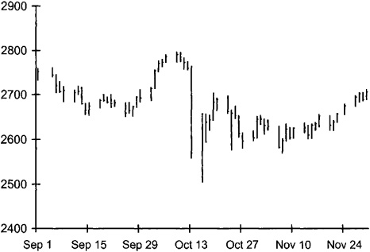
FIGURE 28-4.\ Dow Jones Industrial Average, September-November 1989
Source: Bridge Information Systems.
Although no adequate explanation exists for this event, some intriguing information may help us understand what happened. Until the UAL information arrived, trading had been quite uneventful. By 2:30, many traders in the New York stock and index futures markets, and in the Chicago index futures markets, had left early to go home for the weekend. The warm Indian summer weather that both cities enjoyed that day undoubtedly influenced their decisions to leave early: Many traders probably were either consciously or subconsciously aware that they might not enjoy such good weather again until after the coming winter. The departure of many traders from the markets thus removed much liquidity. If no unusually large demands for liquidity had occurred, the day surely would have ended normally. The market dropped because the UAL news arrived when the market was not well prepared to handle the large demands for liquidity that sellers subsequently placed upon it.
The early departure of many traders, however, does not adequately explain why the whole market fell. One highly speculative explanation was rumored but never confirmed. Traders who recognized that the market would be vulnerable to a downside bluff may have deliberately caused the Mini-Crash. (Chapter 12 describes how bluffers can profit from manipulative trading strategies.) Under this scenario, these traders recognized that the market was weak, or they were waiting for some bad information that they thought other traders might misinterpret if it were associated with a large price fall. In either event, the conditions for a marketwide bluff were ideal: The market was unusually illiquid; the negative news about UAL grabbed everyone's attention; and traders undoubtedly were sensitive to volatility near the second anniversary of the October 1987 stock market crash. If a bluff did take place, the bluffers would most likely have executed the bluff by selling aggressively in the index futures pits.
No Quorum
Following the 1987 stock market crash, the Chicago Mercantile Exchange adopted a rule to halt trading for an hour in its S&P 500 Index futures contract in the event of a large price change. The rule required that a quorum of the members of the S&P 500 Index Futures Price Limit Committee determine that the market was limit down. The members of the Committee are Exchange members who trade in the pit. Their primary responsibility is to report the time of the halt so that the Exchange can determine when trading should resume. The quorum was not necessary to stop trading because the rules prohibited trading at prices below the price limit.
When the market dropped on the afternoon of October 13, 1989, the CME could not quickly obtain a quorum of the Price Limit Committee. It was rumored that too many members had left the pit early to enjoy the late Indian summer afternoon.
An Appeal for the Truth
Since the statute of limitations on market manipulation expired a long time ago, someone may someday write a credible memoir in which he or she explains how he or she participated in a marketwide bluff on October 13, 1989. Of course, if no such bluff occurred, any such memoir would be fictional rather than autobiographical.
The SEC and the CFTC did not cite any evidence of manipulation in the public reports of their investigations into the Mini-Crash. Any index futures sellers that they may have contacted undoubtedly explained that they sold because they recognized the implications of the UAL news. Unless these agencies could prove beyond a doubt that manipulation took place---an essentially impossible objective, given the UAL news and its potential implications---they could not have publicly acknowledged that they strongly suspected bluffing without severely shaking confidence in the markets. To date, no publicly available evidence has surfaced to suggest that there is any truth to this rumor.
28.2.4 The Palladium Cold Fusion Bubble
On March 23, 1989, electrochemists Martin Fleischmann and Stanley Pons announced that they had achieved cold fusion by supersaturating a palladium cathode with deuterium in an electrolytic cell. They claimed that the process produced excess energy at room temperatures. They also provided an intriguing conjecture as to why the process worked.
The announcement was extremely exciting. If the results were correct, the new process might very likely provide a clean, cheap, and inexhaustible source of energy.
Unfortunately, other researchers have not reliably replicated their results. Although some electrolytic cold fusion research continues to this day, most physicists do not believe that the research will ever lead to a reliable source of power. Intriguingly, some responsible physicists believe that electrolytic cold fusion experiments have revealed new physics.
The press widely reported the announcement by Fleischmann and Pons, as well as the skepticism of some high-energy physicists. A few days afterward, some enthusiastic traders started buying palladium futures contracts. They presumably concluded that the demand for palladium would increase substantially if other researchers confirmed the results. The price of palladium quickly spiked upward by 24 percent over the next three weeks. On several days, the futures contract closed up the daily price limit of 6 dollars. Figure 28-6 shows that the price fell back as laboratories throughout the world announced that they were unable to replicate the results.
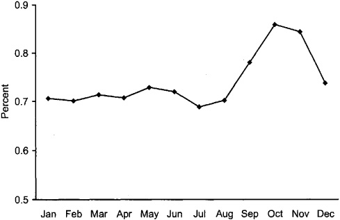
FIGURE 28-5.\ Mean Absolute Daily Returns to the Dow Jones Industrial Average, by Calendar Month, 1901-2000
Source: Author's calculations, using index data from Dow Jones and Co. at [www.djindexes.com].
Why October?
October has been one of the most volatile months of the year in the U.S. stock markets. The 1929 and 1987 stock market crashes, as well as the 1989 Mini-Crash, took place in October. More recently, October 1997 was quite volatile as well. Four Octobers (1929, 1931, 1932, and 1987) appear in the list of the 10 most volatile months of the twentieth century. Why are Octobers so volatile?
If you are a probabilist, you might want to consider whether volatile Octobers are simply coincidental. If we assume that three extreme events occur at random among the 1,200 months in a century, the probability that they all would occur in the same calendar month (not necessarily October) is only 0.68 percent.^1^ The probability that any month would be represented---at random---four or more times in the top 10 list of volatile months is less than 8 percent. It is not likely that these events happened only by chance.
If you are a social historian, you might explain that history repeats itself. Perhaps traders are more likely to reflect on valuations in months when history reminds them that they may be at risk. The first extreme event could have taken place in any calendar month. Subsequent extreme events may have occurred in the same calendar month because the anniversary of the first event served as a psychological focal point for traders. The high volatility that markets experienced in October 1997---the ten-year anniversary of the 1987 crash---is consistent with this theory.
If you are a political scientist, you might note that October is the month when the government gets down to business after its summer recess. The government often intervenes in the economy, and these interventions often have strong implications for stock values.
If you are a psychiatrist or an evolutionary biologist, you might note that people most notice the end of summer and the approach of winter in October, when changes in the weather and in the total hours of daylight are most obvious. The darkness and thoughts of the coming winter depress many people and make them more risk averse. These influences may cause prices to fall in October. (The change from daylight savings time to standard time may also be important.) Although this theory predicts that prices in southern hemisphere markets should be most volatile in April, the strong correlation between price changes in southern and northern hemisphere markets---due in part to share ownership of southern hemisphere companies by northern hemisphere investors---probably would make tests of this prediction inconclusive.
The last two theories suggest that other fall months should also be volatile. Figure 28-5 shows that they indeed have been.
Source: Author's calculations using index data from Dow Jones and Co. at [www.djindexes.com].
1. If you are indeed a probabilist, you may appreciate the derivation of this probability: The total number of different ways to choose three of 1,200 months is
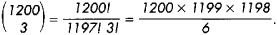
Likewise, the total number of ways to choose three years from 100 years
of a given calendar month is
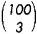
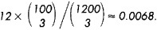
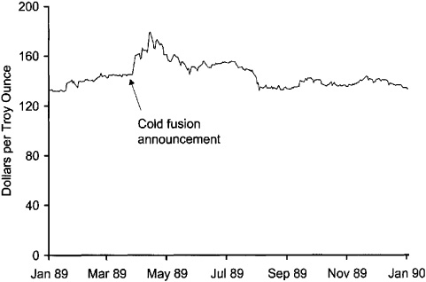
FIGURE 28-6.\ London Daily Palladium Price Fixings, 1989
Source: DataStream.
Great Companies and Great Investments
The traders who bought Iomega at prices substantially above values made one of the most common investing mistakes. They mistook a great company for a great investment. In 1996, Iomega produced excellent products that served extremely large markets. The firm, however, was a poor investment then because it was overpriced.
A good company is a good investment only if the price is not too high. A poor company can be a great investment if the price is low enough---assuming, of course, that the prospects of the company are not so bad that the company has no value at all.
Although the palladium bubble appears to be an example of transitory volatility, it is better classified as an unusual example of fundamental volatility. The traders who bought palladium probably formed rational expectations about the future value of the metal, given all available information. Although they were not physicists, they knew that many physicists were skeptical about the results. They also knew, however, that if the results proved true, palladium might become many times more valuable. With hindsight, we know that these speculators were wrong. However, given the information people had at the time, their trading decisions seemed quite sensible. The palladium bubble therefore was an example of unexpected extreme good fundamental news followed by a stream of bad fundamental news that ultimately resolved uncertainty about the discovery.
28.2.5 The Iomega Bubble and Crash
Iomega is a removable media computer disk drive manufacturer. Its
best-known product---the Zip drive---uses disks just slightly larger
than standard
3 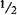
In early 1996, eager buyers pushed Iomega's stock price up to an intraday high of 55[⅛]{.ent1} dollars per share. (See figure 28-7.) At that price, the price to earnings ratio for the stock, based on Iomega's 1995 earnings, was almost 1,000. Buyers clearly expected phenomenal earnings growth. Such extreme growth, however, never materialized. In its best year, the company earned only 1.26 dollars per split-adjusted share. (The company's earnings and share price crashed in 2001 when its removable media drives experienced withering competition from cheap CD and DVD optical drives that can record and rewrite on much less expensive media.) Perhaps the most convincing measure of the bubble appears in the following comparison: At its peak, the entire value of Iomega stock was worth more than 10 percent of the entire value of IBM stock! Not surprisingly, Iomega's stock price crashed.
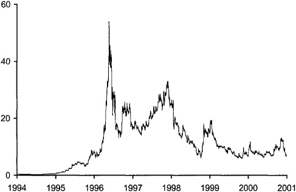
FIGURE 28-7.\ Iomega Split-adjusted Closing Share Prices, 1994--2001 Iomega's all-time high closing price occurred on May 23, 1996, three days after the stock split 2 for 1. The stock also split 2 for 1 on December 23, 1997, 3 for 1 on February 1, 1996, and 5 for 4 on November 25, 1994. I adjusted earlier and later prices in this plot for these splits so that you can compare them to the May 23 high.
Source: Center for Research in Security Prices.
28.2.6 The Nasdaq Bubble
The Nasdaq bubble (figure 28-8) was in many ways similar to the bubble that preceded the 1929 stock market crash. Traders who were excessively optimistic about prospects for new technology companies caused both bubbles. In the Nasdaq case, these were companies primarily in the Internet, telecommunications, computer, and biotechnology sectors. Momentum traders who wanted to participate in the gains made by their friends and acquaintances also fueled both bubbles.
The Nasdaq bubble was fueled in part by many momentum investors who placed money in largely undiversified mutual funds that had performed well in the recent past. These funds often invested the avalanche of new money that they received in the same stocks that they held. The new money pushed up the prices of their holdings, which ensured that the funds would continue to produce high returns. The high returns led to more inflows of new money. The small fraction of shares available to public investors in many of the technology companies exacerbated the phenomenon. In the end, of course, many investors learned the hard way that past performance is a poor predictor of future returns.
To some extent, a new faith taught to investors by investment advisers (and by some academics) also contributed to the Nasdaq bubble. These advisers told long-term investors not to worry about equity market risk because, over the long run, stocks have always beat investments in all other broad asset classes. Many investors were emboldened by the idea that they could not lose if they waited long enough.
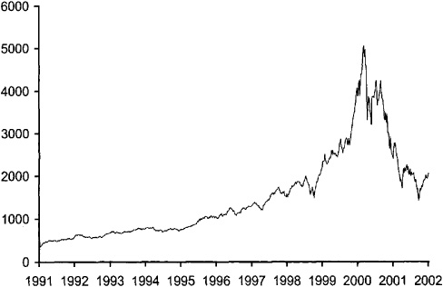
FIGURE 28-8.\ Nasdaq Composite Index, 1991-2002
Source: Bridge Information Systems.
You Should Live So Long!
It is impossible to say now whether Nasdaq stock returns will eventually catch up with bond returns. Investors who bought the Nasdaq market near its 5132.52 peak on March 10, 2001, undoubtedly will have to wait a long time until their investments catch up with the bond investments they otherwise might have made then. Let us hope that they will all live long enough to see it happen. Of course, they will not be waiting alone. Among others, investors who bought Japanese equities around December 1989 when the Nikkei 225 Stock Average was near its peak of 38,916 (see figure 28-9) will keep them company.
Once again, many investors learned the hard way that past performance is a poor predictor of future returns.
Interestingly, the empirical results upon which the equity faith is based come primarily from the U.S. markets. Stocks in many other markets have not performed as well as comparable alternative investments.
A final factor worth noting involves new traders who traded over the Internet. Giving orders to brokers by phone intimidates many people. Many people are afraid that their brokers will judge them for the trading decisions they make, for their inability to properly articulate their desires, or for taking too long on the telephone. Even though their brokers may forever be strangers to them, the fear of trading with a judgmental broker undoubtedly inhibited many uninformed traders. The advent of Internet trading allowed many of these timid traders to access the market at their leisure, without worrying about what others would think of them. Widespread Internet-based trading therefore probably brought many new uninformed traders into the market. The money these traders put into the market probably contributed to the Nasdaq bubble.
28.2.7 The Japanese Asset Bubble
Japanese equity and Japanese real estate markets experienced a large bubble that peaked in the end of 1989. Figure 28-9 shows that the equity markets fell to a fraction of their peak levels and have not recovered. The real estate markets likewise have not recovered.
Like all bubbles, the Japanese asset bubble had many causes. Investors both in Japan and in the rest of the world were extremely confident in the Japanese economy. In the late 1980s, Japanese companies were widely cited as examples of efficiency and productivity. Many people undoubtedly invested in Japan to participate in what was then known as the Japanese economic miracle.
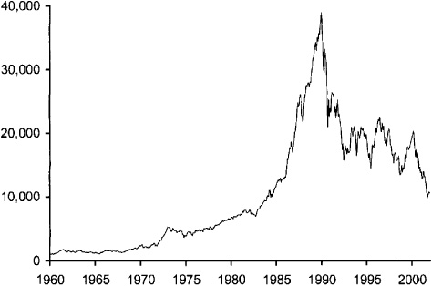
FIGURE 28-9.\ Nikkei 225 Stock Average, 1960-2000
Source: Bridge Information Systems.
Japanese monetary policy probably contributed to the bubble. Interest rates in the mid- and late 1980s were extremely low, and the money supply grew very quickly. Many commentators said that there was simply too much money in Japan. Since Japanese investors---both individual and institutional---historically have not placed much of their money abroad, they invested the excess money locally. This money pushed up equity and real estate prices.
Although it is interesting to speculate on why Japanese monetary policy was so loose, doing so is beyond the scope of this book. The answer undoubtedly lies in the complex relationships among Japanese firms, banks, monetary authorities, and political parties.
28.2.8 Summary
Market crashes are like automobile and airplane crashes. In both cases, crashes usually do not occur for a single simple reason. Instead, a number of factors cause people to become confused about what is happening. Their confusion becomes most dangerous when they are uncertain about risk. They then pay attention to the wrong issues, they ignore important risks, and, if things happen too quickly, they panic and lose their ability to make good decisions. In all types of crashes, the survivors rarely make the same mistakes again. When crashes reoccur, it is often because new participants have failed to learn lessons learned by others.
The examples in this section show that most major market crashes are not short-term transitory trading problems. More often, the conditions that led to the crash started creating a bubble long before the crash occurred. Crashes more often represent a final restoration of rational pricing rather than a transitory problem in need of correction.
Regardless of these observations, political passion for change is often quite high following some crashes. Many people demand that regulators do something to prevent future occurrences. We next consider public policy responses to extreme volatility.
28.3 REGULATORY RESPONSES TO EXTREME VOLATILITY
Policy makers have responded to extreme volatility primarily by proposing circuit breakers to restrain traders. Circuit breakers are trading rules that limit trading activity:
• Trading halts stop trading when prices have moved, or will imminently move, by some specified amount. Trading may remain halted until the order imbalance is resolved or until some specified period passes.
• Price limits require all trade prices to be within a certain range on a given day. If traders are unwilling to negotiate prices within that range, trade stops until traders are willing to trade within the limits.
• Transaction taxes restrict trading by taxing it.
• Margin requirements and position limits restrict the size of positions that traders can accumulate.
• Collars restrict access to trading systems.
In this section, we consider how these rules may affect volatility, liquidity, and price efficiency. We shall see that some of these proposals are economically sensible while others are quite controversial.
28.3.1 Trading Halts and Price Limits Arguments in Favor
Proponents of trading halts and of price limits believe that these circuit breakers reduce short-term volatility by slowing price changes. Whether this is desirable depends on the cause of the volatility.
If new fundamental information causes the volatility, the halt will merely postpone the inevitable. While the markets are closed, prices will be less informative, and no one will be certain of the new price levels. Worse, the uncertainty associated with the halt may cause uninformed traders to panic, which may generate unnecessary transitory volatility when the market reopens. On the other hand, if uninformed traders panic when price is moving quickly, the trading halt may cut them off before they can act.
If an order imbalance originating among uninformed traders causes the volatility, a trading halt that stops their trading may be beneficial. The benefits come from protecting the market from their volatility-inducing trades and from protecting uninformed traders from trading losses that they can incur in poorly functioning markets.
Trading halts also can give informed traders an opportunity to enter and provide liquidity. Traders who are willing to supply liquidity may not be able to do so if the market is moving quickly and they are not paying attention. Markets therefore may attenuate volatility by halting trading to publicize order imbalances.
A trading halt rule may make order-driven markets more liquid by switching the trade pricing rule from the discriminatory pricing rule used in continuous trading to the uniform pricing rule used in the single price auctions that resume trading. In a continuous auction, standing limit orders typically trade at their limit prices. When price is dropping quickly, buyers with standing limit orders suffer immediate losses when their orders execute and prices continue to fall. A trade halt can prevent these losses by forcing the market to clear at a single price when it resumes trading. All limit order buyers who participate in the single price auction receive the same price, regardless of their limit order prices. When protected by an effective trading halt rule, limit order traders therefore may be more willing to offer liquidity under normal circumstances. A trading halt rule therefore can decrease transitory volatility by encouraging traders to offer more liquidity.
Coordinated Trading Halt Rules
Following the 1987 stock market crash, U.S. stock and index futures exchanges adopted a set of coordinated trading halt rules. These rules halt trading for various periods, based on how much the market has dropped and when it has dropped. The New York Stock Exchange version of this rule is known as Rule 80B.
The current version of these rules calls for a Level 1 halt if the Dow Jones Industrial Average drops by more than approximately 10 percent from its closing value on the previous day. In that case, the markets will halt for one hour if the event occurs before 2:30 P.M., and for half an hour if the event occurs after 2:30 P.M. but before 3:30 P.M. If the event occurs after 3:30, and there is no Level 2 halt, the market will not halt.
A Level 2 halt will occur if the DJIA drops by more than 20 percent from its previous closing value. In that case, the markets will halt for two hours if the drop occurs before 1 P.M. and for one hour if it occurs between 1 P.M. and 2 P.M. If the 20 percent drop occurs after 2 P.M. and there is no Level 3 halt, the market will not halt.
A Level 3 halt will close trading for the rest of the day at any time the Dow drops by more than 30 percent from its previous closing value.
These coordinated trading halt rules have halted trading only once. On October 27, 1997, the DJIA had dropped 350 points, or 4.5 percent, by 2:35 P.M. The then current version of these rules halted trading for 30 minutes. When trading resumed, the DJIA dropped 200 more points by 3:30 P.M., which halted trading for the day. Many people felt that these halts occurred too quickly. The various exchanges therefore amended their coordinated halt rules in early 1998 to provide for halts at 10, 20, and 30 percent thresholds, as described above.
Source: NYSE Rule 80B at [www.nyse.com/pdfs/lm9815.pdf].
Finally, a trading halt rule may decrease transitory volatility by allowing traders greater time to respond to intraday margin calls and to remove stop loss orders. When traders are unable to satisfy their margin calls, brokers will trade to stop their losses. Since stop loss orders further imbalance an uninformed order flow, a halt that reduces their numbers may reduce transitory volatility.
Arguments Against
Opponents of trading halts and price limits offer two arguments that suggest these circuit breakers may actually increase transitory volatility. First, if traders fear that a halt will occur before they can submit their orders, they may submit their orders earlier to increase the probability that they execute. Greater volatility therefore will result as the price limit attracts orders from rationally fearful traders. Economists and traders call this effect the gravitational effect.
Am I Bankrupt?
Suppose that Spencer has a 1 million-dollar long futures position for which he posted a 100,000-dollar margin. For convenience, assume that the contract is denominated so that each point in price is worth 10,000 dollars to Spencer. Spencer has 100,000 dollars in other assets in addition to his margin. He therefore knows that he will be bankrupt if the price drops by 20 points.
If the futures price were to drop immediately by 25 points, he should lose everything. In practice, he would immediately lose only his 100,000-dollar margin. His broker would then try to collect the additional 150,000 dollars. Although Spencer would be able to pay 100,000 dollars, he probably would be reluctant to pay his broker anything. The broker might be able to collect Spencer's debt only at great expense. If Spencer can hide his remaining wealth, the broker might not even collect Spencer's remaining 100,000 dollars. In that case, the broker would lose 150,000 dollars plus collection expenses.
Now suppose instead that the futures exchange limits the price drop to five points per day. On the first day, the contract would close limit down five points. Spencer's broker would collect 50,000 dollars from Spencer's 100,000-dollar margin. He also would ask Spencer to post an additional 50,000 dollars to cover his losses. If Spencer does not realize that the total drop will ultimately be 25 points, he might voluntarily post the margin.
The next day, the contract would again close limit down five points. Spencer's broker would again ask him to post additional margin to cover his losses. If Spencer still does not realize that the price will ultimately drop 15 more points, he might make the margin call with his last 50,000 dollars and hope that price rebounds when trading resumes.
On the third, fourth, and fifth days, the contract would again drop by the limit. Spencer's broker would ask for more margin, but Spencer would not be able to cover his losses. The broker would then deduct the third- and fourth-day losses from the 100,000-dollar margin. Since Spencer could not meet the margin calls, the broker would close the position when the market restarted, trading 25 points down. Spencer then would owe the broker 50,000 dollars that he does not have.
If the gravitational effect is strong, a discretionary halt procedure may be better than a price triggered trading halt rule because the former is less predictable. For example, the New York Stock Exchange allows floor officials to halt trading if, in their opinion, trading would otherwise become disorderly. They usually do this when an order imbalance exists or when they know that a company will soon release material information. Since off-floor traders generally cannot predict when floor officials will halt trading, this discretionary trading halt rule has little gravitational effect.
Second, value traders may reduce their surveillance of the market if they know that the media will notify them when a trading halt occurs. If so, a trading halt rule would make the market less liquid between trading halts. Transitory volatility would increase and more trading halts would occur.
Other Issues
When several markets trade essentially the same risk, the imposition of a trading halt or a price limit on one market will have consequences for the other markets. In particular, when only one market halts trading, traders will divert order flow to other markets. If circuit breakers are desirable, exchanges should coordinate their regulations. Otherwise, uncoordinated circuit breakers may increase volatility by forcing traders to resolve all excess demands for liquidity in a single market.
Trading halts and price limit rules also benefit the markets by making it easier for brokers and clearinghouses to collect margins. Traders who know that they are bankrupt generally do not make margin payments. Traders who are uncertain about being bankrupt may make margin payments to avoid losing their positions. Trading halts make it difficult for traders who are near bankruptcy to determine whether they are bankrupt because the halts prevent traders from knowing at what prices trading will ultimately resume. Markets that have trading halt rules therefore can have lower margin requirements.
28.3.2 Increased Margin Requirements and Transaction Taxes
Throughout history, many people have believed that excessive trading increases volatility. Some commentators therefore have proposed that regulators increase margins or impose transaction taxes to reduce trading in stocks, futures, and options.
Margins and transaction taxes have related but slightly different effects on trading. Large margins decrease position sizes by increasing carrying costs and by preventing capital-constrained traders from acquiring large positions. Transaction taxes reduce trading by making it more expensive. Taxes penalize high frequency trading strategies more than buy and hold strategies.
To evaluate the merits of these proposals, we must review why people trade. Since people trade for many reasons, we must consider several types of traders.
Restrictions on informed traders would make prices less informative. News traders cause prices to reflect the latest fundamental news. Restrictions on their trading slow fundamental price changes. Value traders cause prices to move back toward fundamental values when uninformed traders push prices away. Since value traders ultimately offer liquidity to uninformed traders, and since they make markets resilient to the price impacts of uninformed traders, restrictions on their trading would increase transitory price volatility.
Dealers offer liquidity to other traders. Any measures that increase their transaction costs will decrease market liquidity and increase transitory volatility.
Order anticipators trade in front of other traders. When they front-run uninformed traders, they increase transitory volatility. When they frontrun informed traders, they may make prices more informative in the short run. In the long run, however, the additional transaction costs that they impose upon informed traders are the same as a tax on informed trading. Measures that would decrease trading by order anticipators therefore would decrease transitory volatility and make prices more informative.
Bluffers manipulate prices to trick uninformed traders into offering liquidity foolishly. Since their price manipulations are not related to fundamental information, they contribute to transitory volatility. Regulations that increase their trading costs would decrease transitory volatility.
Utilitarian traders use markets to help them solve problems that they face. In particular, investors and borrowers use markets to move money through time, hedgers use them to exchange risks, and asset exchangers use them to obtain instruments that are of greater value to them than the instruments that they tender. Since utilitarian traders are uninformed traders, their trading generally increases transitory volatility. Restrictions on their trading therefore would decrease transitory volatility in the short run. Such restrictions would be highly undesirable, however, because they would obstruct utilitarian traders from solving important problems that they face. Since good solutions to their problems benefit the economy as a whole, restricting their trading would be foolish.
Gamblers trade for entertainment. Many gamblers, however, do not realize that they are gambling. Instead, they generally believe that they are well-informed traders. (If they traded successfully, they would indeed be well-informed traders.) In practice, gamblers usually trade on stale information that prices already reflect. Gamblers therefore increase transitory volatility. Measures that would discourage them from trading would decrease transitory volatility.
These discussions suggest that the markets would be best served if regulators could restrict trading by order anticipators, bluffers, and gamblers without unduly affecting trading by dealers, informed traders, and the utilitarian traders, for whom the markets ultimately exist. It is difficult, however, to imagine how regulators could design regulations that would effectively discriminate among these types of traders.
Taxes on trading fall more heavily on high frequency traders than on low frequency traders. Since most utilitarian trading problems do not require many trades to solve, a transaction tax would have less effect on utilitarian traders than on gamblers, bluffers, and order anticipators, who may trade frequently. A transaction tax, however, would fall disproportionately on dealers, who trade quite frequently. Although it might be possible to exempt dealers from a transaction tax, fair and meaningful regulatory distinctions between dealers and other high frequency traders can be difficult to establish.
Removing uninformed traders from markets may actually increase transitory volatility in the long run. Informed traders can profit only when uninformed traders trade and lose to them on average. Without these profits, informed traders would not invest in the research necessary to estimate values, and prices therefore would be less informative. In the long run, a decrease in the number of uninformed traders may actually increase transitory volatility by discouraging traders from doing the research necessary to identify fundamental values, and thereby discriminate between transitory volatility and fundamental volatility.
28.3.3 Trading Collars
Trading collars are rules that explicitly prevent traders from trading under certain conditions. The only significant trading collar of which I am aware is NYSE Rule 80A.
28.3.4 Circuit Breaker Summary
The theoretical effects of circuit breakers on volatility are mixed. We can confidently say that circuit breakers slow price changes associated with changes in fundamental information. Their effects on transitory volatility are less certain. They decrease transitory volatility when they restrain the trading of the traders who most contribute to it. These traders are typically uninformed traders, order anticipators, and bluffers. They increase transitory volatility when they restrain the trading of the traders whose trading normally limits transitory volatility. These traders include informed traders, dealers, and arbitrageurs. Since we do not know which effect is larger, the theoretical net effect of circuit breakers on transitory volatility is indeterminate.
NYSE Rule 80A
NYSE Rule 80A prevents index arbitrageurs from using market orders to trade their index arbitrage program trades in S&P 500 Index stocks after the Dow Jones Industrial Average has moved up or down by approximately 2 percent. Instead, when the collar is in effect, arbitrageurs must use tick sensitive orders to trade S&P 500 stocks.
The primary effect of Rule 80A is to make index arbitrage more difficult and expensive when the collar is active. It probably increases transitory volatility because it forces the cash and futures markets to operate more independently. When arbitrage is unrestricted, arbitrageurs move liquidity from the market where it is in greatest demand to the market where it is in greatest supply. Their efforts reduce transitory volatility because order flow imbalances in the two markets sometimes cancel. When the collar restricts arbitrage, each market must separately satisfy demands for liquidity. The collar therefore discourages arbitrageurs who try to cross a buy order placed in one market with a sell order placed in another market.
In practice, index arbitrageurs can subvert the collar in several ways. They can submit their program trades through floor brokers, they can submit fewer than 15 orders through SuperDot to avoid classification as a program trade, and they can construct their hedge portfolios using stocks that are not in the S&P 500 Index. These methods all increase arbitrage costs and risks, but not appreciably so. The collar therefore probably does not have much effect on the markets.
Proponents of the collar argue that it decreases volatility at the NYSE by preventing the more volatile futures market from transmitting volatility to the cash market. Although this is undoubtedly true, the argument fails to distinguish between fundamental and transitory volatility. The futures market is more volatile than the cash market over short time intervals because it is better organized to discover fundamental index value quickly. Unlike cash market traders, futures traders are not concerned about price continuity or firm-specific risks in the markets for 500 securities.
Some circuit breakers may increase transitory volatility while others decrease it. For example, the NYSE Rule 80A collars probably slightly increase transitory volatility because they primarily restrict the trading of arbitrageurs while having almost no effect on uninformed traders. Conversely, trading halts may decrease transitory volatility because they primarily protect liquidity suppliers while frustrating uninformed traders.
Economists have conducted numerous empirical studies to determine what effect circuit breakers have on volatility. These studies generally have been inconclusive. Extreme volatility events have not occurred often enough for investigators to confidently evaluate how well circuit breakers perform.
28.3.5 Other Responses to Extreme Volatility
Regulators and market organizers have been quick to respond when excess volatility appears to have been related, at least in part, to deficiencies in trading systems. For example, following the 1987 stock market crash, the NYSE invested billions of dollars in its information infrastructure to ensure that it would not experience capacity problems again.
The Nasdaq market likewise improved the Small Order Execution System (SOES) to ensure that its dealers would always be available to handle orders. Before the 1987 crash, dealer participation in the SOES system was voluntary. The system therefore was not well used because dealers did not want to accept the trade liabilities it imposed upon them. Following the crash, Nasdaq made participation in SOES---now SuperSoes---mandatory. Nasdaq market makers who withdraw from SuperSoes in the middle of a trading day must wait 20 trading days until they can resume dealing in that stock.
Markets also have introduced new products in response to extreme volatility. The most notable of these have been various long-dated options that entrepreneurs created to meet the needs of portfolio insurers. These securities have not been very successful because portfolio managers apparently will not buy insurance when they can easily observe its high cost.
28.4 THE POLITICS OF REGULATORY INTERVENTION
The clamor for regulatory responses to crashes undoubtedly influences the policies that regulators ultimately adopt. When regulators and traders understand the political aspects of regulation well, better regulations probably result. This section therefore briefly discusses the political economy of regulation.
We consider two models of regulation. The first involves regulatory risk, and the second involves rent seeking. The first model helps us understand why regulators may regulate even when their regulations will produce little or no economic value. The second model helps us understand how regulated people and institutions can use the regulatory process for their private benefit. We illustrate these discussions with two regulations that came out of the 1987 stock market crash: New York Stock Exchange Rules 80A and 80B.
28.4.1 Regulatory Risk
Following the October 1987 stock market crash, the markets adopted a coordinated trading halt rule that was almost meaningless. At the time of its adoption, NYSE Rule 80B would halt trading only if the Dow dropped by more than 12 percent. Such a large drop had occurred only once in the life of the U.S. markets (during the October 1987 crash). Why did the markets adopt this mild trading halt rule?
In the days and weeks after the 1987 crash, many people demanded that regulators act to prevent future crashes. Fewer people considered whether regulators could prevent crashes or whether their efforts to do so would impose serious costs upon the market. In this environment, we can easily imagine that government and exchange regulators reasoned as follows:
• If we fail to adopt any circuit breakers and another crash occurs, the public will hold us responsible for failing to protect them, regardless of whether the circuit breakers would---or even could---have made a difference.
• If we fail to adopt any circuit breakers, and no crash occurs, we will have saved whatever costs the circuit breakers might impose upon the markets, but nobody will credit us with our wisdom.
TABLE 28-1.\ Perceived Costs and Benefits to Regulators of Their Decision to Adopt Circuit Breakers
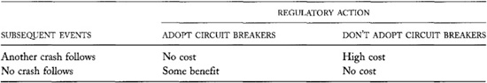
• If we adopt circuit breakers and another crash occurs, people will learn that we cannot prevent crashes, but they will not blame us for not trying.
• If we adopt circuit breakers, and no crash occurs, people may credit us with preventing another crash, even if the circuit breakers are not effective. Although we will be responsible for imposing potentially costly and unnecessary restrictions on the market, people may not recognize these costs, and they probably will not attribute them to us.
Odd/Even Gas Rationing
The imposition of odd/even gas rationing during the 1974 oil crisis is an extreme example of an ineffective regulatory action. Following the October 1973 war between Israel and most of its Arab neighbors, many Arab states embargoed exports of oil to the United States. The embargo would have raised gasoline prices in the United States if they had not been regulated. Instead, long lines formed at gas stations as consumers tried to purchase scarce gasoline.
Rather than raise the price of gas to ration it, the government imposed odd/even rationing. Motorists could buy gas only on odd-numbered days for cars with odd-numbered license plates and only on even-numbered days for cars with even-numbered license plates. This rationing scheme had little effect on gas lines because almost no drivers buy gas everyday. It did prevent panicked drivers from filling up every day, however.
Table 28-1 summarizes these costs and benefits. If regulators act to maximize their personal welfare, these costs and benefits imply that they would be better off adopting circuit breakers, whether or not another crash occurs.
Consider now the decision to adopt mild or severe circuit breakers. Mild circuit breakers are unlikely to change trading practices significantly, whereas severe circuit breakers will alter the character of trading. Regulators may have reasoned as follows:
• If we adopt mild circuit breakers and another crash follows, people may blame us for not acting more strongly. They may reserve their judgment, however, because many may conclude from the second crash that regulators cannot prevent crashes.
• If we adopt severe circuit breakers and another crash follows, most people will conclude that regulators cannot prevent crashes. Some, however, will claim that had the severe circuit breakers not been in place, the unconstrained market would have been able to handle the crisis. People may blame us for causing the crash.
• If we adopt mild circuit breakers, and no crash follows, we will have had little effect on the markets.
• If we adopt severe circuit breakers, and no crash follows, people will blame us for overreacting.
Table 28-2 summarizes these costs and benefits of the decision to adopt mild or severe circuit breakers. These assumptions imply that regulators would be better off if they adopt mild circuit breakers, whether or not another crash occurs.
The conclusions in these simple analyses obviously depend on the costs and benefits that I assumed. If you make other assumptions, you may obtain different conclusions, or you may be unable to obtain any conclusions without making additional assumptions about the probabilities of future crashes. These assumptions seem reasonable to me, but you may think otherwise.
TABLE 28-2.\ Perceived Costs and Benefits to Regulators of Their Decision to Adopt Mild or Severe Circuit Breakers
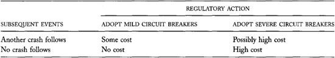
The conclusions are consistent with well-recognized regulatory behavior. Regulators often respond to crises with policies that have little or no actual impact. When the public demands action, regulators tend to act. However, when faced with uncertainty about the consequences of regulatory actions, regulators frequently do not act decisively. They do not want the public to blame them for exacerbating a problem or for creating new problems. When regulators do act decisively, they usually have a strong political mandate based on a clearly defined ideology or unambiguous empirical results. (Consider, for example, deregulation in the Reagan years or the ban on the birth defect-causing sedative Thalidomide.) No such mandate for extreme change followed the 1987 crash.
28.4.2 Regulatory Capture
The other circuit breaker adopted by the New York Stock Exchange following the 1987 stock market crash was the Rule 80A collar on index arbitrage program trading. Although a similar analysis of regulatory risks may explain why the Exchange adopted this rule, an analysis of rent-seeking behavior (self-interest) is more insightful.
Arbitrageurs compete with specialists to supply liquidity. Both traders move liquidity between buyers and sellers who are unable or unwilling to trade with each other. Arbitrageurs construct hedge portfolios to move liquidity from one market to another at one point in time. Specialists use their inventories to move liquidity from one point in time to another within their market. The two types of traders compete in the following sense: When either trader cannot act, the profit opportunities for the other are greater. Since Rule 80A restricts index arbitrage, it benefits specialists at the expense of arbitrageurs.
Specialists also benefit from Rule 80A because it helps them avoid trading with arbitrageurs. When a specialist provides liquidity to an arbitrageur, the specialist is often on the wrong side of the market. For example, if the futures market is falling, and the cash market is lagging behind, arbitrageurs will be selling to specialists. The specialists will be buying stock at prices that very likely are too high, and will thereby lose money. These arguments suggest that specialists had a strong interest in adopting Rule 80A.
The Exchange adopted the rule, at least in part, because specialists have more power at the NYSE than do arbitrageurs. If power were based only on relative numbers, specialists certainly would dominate over arbitrageurs. Far more members of the NYSE conduct specialist operations than arbitrage operations. In November 1997, 470 of the 1366 members of the Exchange were full-time specialists. In contrast, only 20 members then conducted 95 percent of the program trades. These numbers were similar in 1988. Although this comparison is overwhelming, it is not necessarily conclusive. Many arbitrageurs are very large wirehouses whose influence at the Exchange may be disproportionate to their numbers.
Two other arguments also support the conclusion. First, the loyalties of independent floor broker members lie primarily with specialists, with whom they regularly deal, rather than with wirehouses, with which they compete. Second, the interests of the senior management of the exchange are more likely aligned with specialists than with arbitrageurs because specialist trading exclusively benefits the NYSE, whereas arbitrage trading also benefits competing futures markets. These arguments suggest that specialists have more political power than do arbitrageurs at the NYSE. We therefore should not be surprised that the NYSE adopted Rule 80A.
This analysis helps explain two significant differences between the Rule 80A collars and the Rule 80B trading halts adopted by the NYSE. First, Rule 80A is triggered by much smaller price changes than those triggering trading halts. Until the Exchange amended the rule in 1999, the collars were imposed almost every trading day in the years prior to the amendment. Second, Rule 80A applies both to price decreases and to price increases, as opposed to just price decreases. These differences ensure that Rule 80A is triggered much more often than Rule 80B. The difference should not surprise us, given the specialists' interest in restricting arbitrage trading.
28.5 SUMMARY
Extreme volatility is quite scary. Large price changes can quickly create, destroy, or transfer enormous wealth. Although people do not like extreme price changes, they can better accept them when they are due to fundamental valuation factors than when they are due to human folly. Rarely, however, is news about fundamental values so important and so surprising that it can explain dramatic price changes. Large price changes therefore often are the result of mistakes that people make. People pay close attention to these events because they do not want to repeat their mistakes.
Perhaps the most common mistake that traders make is to overvalue assets. They make this mistake when they are overly optimistic about future prospects, or when they do not fully appreciate risks. If enough traders share their enthusiasm, they push asset prices beyond fundamental values. Although well-informed value traders may recognize the problem, they may be unwilling or unable to trade in sufficient quantities to prevent a bubble from forming. The bubble pops when traders lose confidence.
Most regulatory initiatives associated with extreme volatility come too late. They also tend to address problems that have more to do with crashes than with the formation of the bubbles that ultimately lead to crashes. Trading halts and price limits, for example, at best only ensure that extreme price changes occur in an orderly fashion. They mainly attenuate volatility only to the extent that they prevent traders from overreacting.
The best way to prevent the formation of bubbles is to empower value traders who can recognize and trade against bubbles. Value traders are most willing to trade when they are confident that they understand values well. Regulators therefore should direct their policies toward lowering the costs of obtaining high quality information that value traders need to form reliable opinions about fundamental values.
Regulators also should try to remove any impediments to short selling that value traders may face. In particular, U.S. regulators should consider eliminating the short-sale rule that requires short sellers to sell stock on an uptick. They also should consider policies that would make it easier for short sellers to obtain short interest on the proceeds of their sales.
28.6 SOME POINTS TO REMEMBER
• The most common mistake traders make is to identify a good company as a good investment.
• Momentum traders are especially susceptible to losing in bubbles and crashes.
• Traders should not speculate if they cannot value the instruments that they trade.
• The portfolio insurance trading strategy is destabilizing when many traders use it, and when traders are uncertain about the total funds under portfolio insurance management.
• Portfolio insurance does not reduce fundamental equity risk. It merely attempts to transfer risk among traders.
• Trade halts and price limits protect liquidity suppliers when prices change quickly. These rules change the trade pricing rule from discriminatory pricing to uniform pricing.
• Traders can panic when they are uncertain about risk, and when unusual situations confront them with new trading problems that require quick solutions.
• Trade halts and price limits can stop a panic by giving traders time to obtain and analyze more information.
• Price limits can protect the clearing system by increasing the margin payments that bankrupt traders pay before they default.
• The gravitational effect associated with trade halts and price limits can increase volatility if traders fear that they will not be able to complete their trades before trading stops.
• After a crisis, regulators often adopt regulations that have little economic value simply to respond to public demands for action.
28.7 QUESTIONS FOR THOUGHT
• What role do pseudo-informed traders have in the formation of bubbles?
• What effect do circuit breakers have on public welfare?
• Was the 1987 stock market crash a problem or a correction to a problem?
• How can a stock market crash cause a recession?
• How might the normal correlation among security prices affect prices when the price of one security falls dramatically?
• Do price correlations rise or fall during extreme volatility events?
• The 1987 stock market crash showed that portfolio insurers grossly underestimated their trading costs. Why did they make this mistake?
• Should the government try to prevent traders from trading foolishly? How can it do so?
• How can the government help investors better understand their trading problems?
• To what extent, if any, would the susceptibility of a market to crashes and bubbles depend on whether it uses a floor-based trading system versus a screen-based trading system? Would the use of a quote-driven trading system versus an order-driven trading system make any difference?
• The SEC, the CFTC, and the various exchanges adopted some circuit breakers following the 1987 stock market crash. Despite many calls for higher margins, the Federal Reserve Board, which is responsible for setting margins for securities borrowing and lending, left margins unchanged. Why did the Fed not act when the other agencies did?
• In the United States, the margins required to obtain equivalent-sized risk exposure in equities, equity options, and equity futures are quite unequal. Should margin rates be standardized across similar instruments? What accounts for the differences in margin rates in these markets?
• During crashes, volume often rises to very extremely high levels. How much excess capacity should markets design into their systems to ensure that they are not overwhelmed in a crash? How would you balance the very high costs of building system capacity with the very high costs of failing to meet demands for that capacity which may never occur?
• Can circuit breakers lower the optimal design capacity of a trading system?
• Immediately following the terrorist atrocities on Tuesday morning, September 11, 2001, all trading in U.S. financial markets was halted. Trading in bonds and in all futures but equity index futures resumed on Thursday. Trading in equities and in equity options and futures resumed on Monday, September 17. Was it wise to halt trading every-where in the United States? Should trading have resumed earlier? Why did the over-the-counter bond markets resume trading before the exchange stock markets?